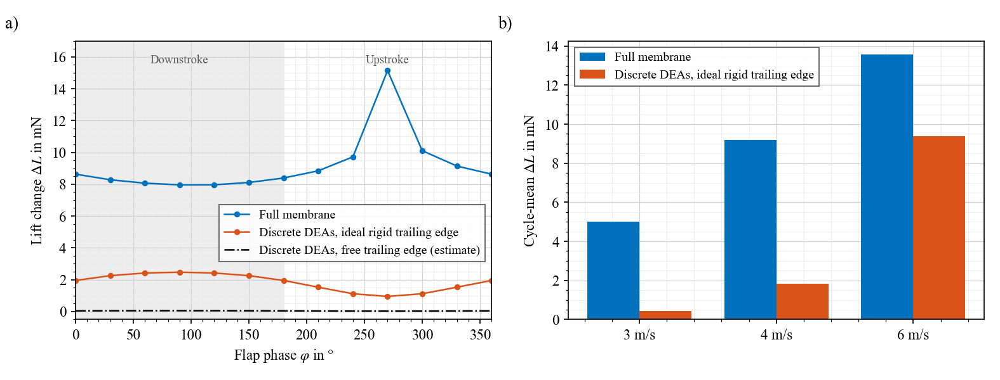

Two ways of putting dielectric elastomer actuators in a bat-inspired wing, compared over a flap cycle on the same wing size, stroke and voltage.
Rolled actuators in a passive membrane. Voltage relaxes the actuators, but the membrane in parallel carries most of the tension.
The skin is the actuator, with no passive membrane in parallel. It is tensioned before bonding, so voltage can remove most of its tension.
| Cycle-mean lift change at 1.6 kV, one wing, 2 Hz | 3 m/s | 4 m/s | 6 m/s |
|---|---|---|---|
| Full membrane, one active layer, earlier shape, $\eta$ = 0.40 | 5.0 mN | 9.2 mN | 13.6 mN |
| Full membrane, best design: two active layers, new shape (lift change at 6°) | 9.0 mN | 16.9 mN | 25.4 mN |
| Discrete DEAs, ideal rigid trailing edge | 0.4 mN | 1.8 mN | 9.4 mN |
| Discrete DEAs, free trailing edge, as tested so far (estimate) | 0.01 mN | 0.04 mN | 0.19 mN |
Baseline lift at 4 m/s is about 16–20 mN per wing.

a) Lift change over one cycle at 4 m/s, 2 Hz, 1.6 kV. The peak near 270° comes from the 0 V wing: its outer panel flips where the angle crosses zero, so it should not be trusted. b) Cycle mean at 2 Hz.